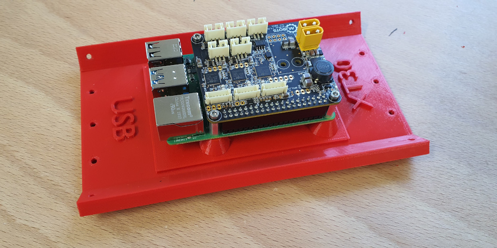
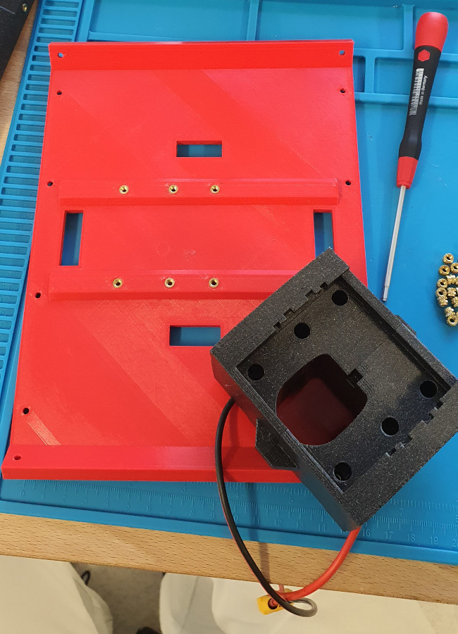
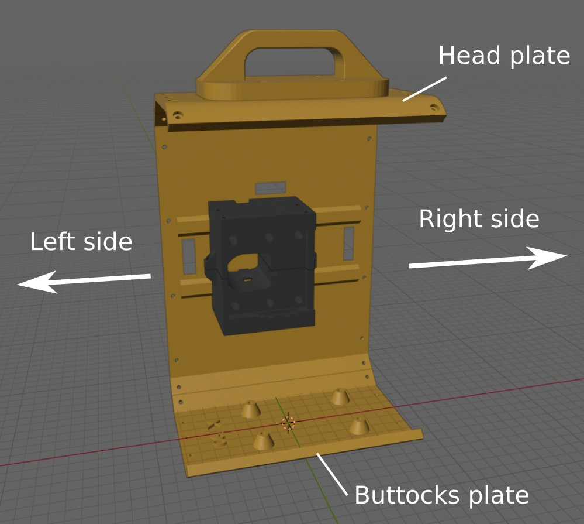
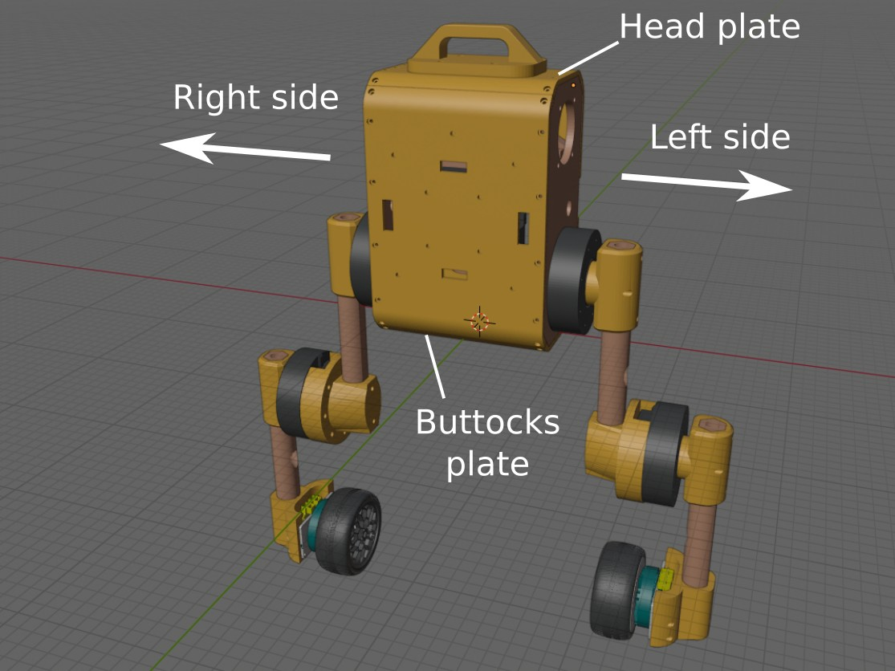
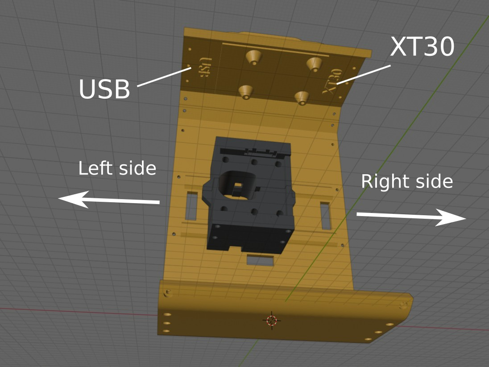

The prerequisites for this stage are:
6.1) Head plate

- Mount the Raspberry Pi to the plate using the four M2 hex spacers. USB ports should be on the side of the “USB” printed text.
- Mount the pi3hat on top of the Pi using the four M2 screws that come with it.
- Mount the head to the left and right plates so that the USB side is to the robot's right (eyes are front, battery is back).
Pay extra care to the last point. If the head is mounted the opposite way, you will have (1) a hard time plugging in XT-30 power cables and (2) to update the IMU frame orientation in the robot's URDF, a.k.a., more trouble than necessary ;-)
- Optionally, 3D print the handle and screw it to the head plate using four M3x8 screws (this can always be done at any later stage).
6.2) Buttocks plate
Screw the power dist board to the buttocks plate using four M2.5x6 screws.
6.3) Face plate


Screw the battery connector to the face plate using six M3x8 screws.
The face plate is symmetric, but once the battery connector is attached to it the resulting assembly is not symmetric any more. The "tip" of the battery connector should point to the left side of the robot, that is, the battery connector is slightly offset to the left of the face plate. We will come back to this when assembling all plates together in the following steps.
6.4) Assemble the face, buttocks and side plates

To assemble the torso, it is best to orient oneself with respect to the face plate. From there, the left/right and front/back sides of the robot will become clearer:
- Screw the face plate to the buttocks plate using M3x8 screws
- Make sure the XT90 side of the power dist board is to the left of the robot (see the figures from this step and from the face-plate step)
- Screw the left and right plates to the face and buttocks plates using M3x8 screws
6.5) Assemble the head plate

Now that we know which sides are left and right, we can
- Screw the head plate to the face, left and right plates
- Make sure USB side of the head plate is to the left of the robot
- Make sure the XT30 side of the head plate is to the right of the robot
The orientation of the head plate is important for both hardware (cable lengths are fit to this orientation, too short for the other one) and software (the IMU is attached to the head plate).
- Screw the two stiffeners to the front plate using M3x8 screws
- (Leave out the internal covers for now)
- Screw the two internal covers using the ten M2.5 screws
- Plug the battery to the connector, it should make a satisfying click
6.6) Assemble the ankles
Follow these steps for each ankle:
- Remove the moteus r4 devkit bracket (holding both the mj5208 and its moteus board) from its 3D-printed black devkit frame using an Allen screwdriver.
- Do not disassemble the mj5208 or the moteus from the bracket.
- Screw the mj5208 motor to the wheel hub
- On the motor, need to use the 3 "external" screws (triangle-patttern) and not the 2 "internal" screw holes opposite the center
- Use M3x8 screws
- Screw the "ankle" 3D printed part to the devkit bracket
- Insert the hub side of the wheel hex coupler on the top cylinder of the wheel hub
- May need to go through the plastic a bit to carve the thread
- If too much plastic inside the hole (3D printed) then need to use a smaller screwdriver to remove any blocking plastic
- Afterwards, use the screw to carve the thread, may need to put some force
- May need to unscrew/screw again to be sure the motor and the wheel hub are the closest possible (smallest gap possible, same for each screw so that motor and wheel hub are aligned)
- Insert the pin in the tiny hole to lock these two parts together
- Insert the wheel hub inside the wheel
- This part is tricky: carefully align the hexagonal shape of the coupler matches the hexagonal hole inside the wheel rims
- If both are aligned, it clicks and the wheel hub is entirely inside the tyre
- Otherwise the hub will protrude a bit on the other side: it this happens, remove the wheel hub by pushing gently (or carefully hammering) from the other side
- Use the 17 mm hex wrench to screw the last bit of the wheel hex coupler, locking the wheel to the wheel hub
6.7) Leg assembly
- Insert comms and power cables inside a cable sleeve (2 times)
- Snake motion seems easier/more satisfying :-)
- Cut about 3-4 cm of heatshrink wrap (2 times per cable set), put them at the end of the cable, maybe a few centimeters before the connectors and heat them
- Be careful not to heat the cable sleeve (it may melt)
- Put some removeable tape on one end of each cable set
- Screw the tibia to the ankle
- Insert the cables inside the tibia/femur
- Use the hole in the middle to insert
- Use some removeable tape to bind the connectors and the heatshrinked wrap, make a pointed "nose" to help insert the cables
- Connect the tibia's connectors to the motor of the wheel
- Screw the qdd100 hip motor to the main body
- Use seven M3x12 (or M3x10, but not M3x8) screws
- Attach the qdd100 hip motor to the horn (T-shaped) part
- Insert the femur with its cable inside the T part
- Connect the connectors to the motor (let some slack so that the motor can turn)
- Attach the qdd100 knee motor to the horn (T-shaped) part
- Use the three small holes on the motor (not the three bigger ones)
- Attach the rounded horn to the other side of the motor
- Insert the tibia inside the rounded horn
- Screw the two parts together
- Connect cables (data, then power) to the motor
6.8) Final assembly
- Connect the left-hip qdd100 CAN to the pi3hat JC1 CAN using a comms cable
- Add a label "JC1" to the comms cable
- Connect the right-hip qdd100 CAN to the pi3hat JC3 CAN using a comms cable
- Add a label "JC3" to the comms cable
- Connect the left qdd100 to the power dist board using a torso power cable
- Connect the right qdd100 to the power dist board using a torso power cable
6.9) Zero the servos
In this step, we run the "hard" calibration routine which sets the absolute zero position for all actuators. For Upkie, the zero configuration corresponds to having both legs straight:
- Put the robot base as vertical as possible
- Wiggle both legs to make them as vertical as possible (hips and knees have some friction)
- Log into the Raspberry Pi:
ssh upkie
- Run the rezero script:
pi@upkie:~$ cd upkie/tools
pi@upkie:tools$ sudo ./hard_rezero
Once "hard" zeroing has been performed, we don't need to run it every time the robot is powered up. Rather, we will run a "soft" rezero via upkie_tool rezero. The soft variant only requires the robot to be vaguely upright (precisely: hip and knee joints within 60 degrees of the true zero). This is because qdd100 actuators have a motor-side encoder behind behind 6x planetary gears.
6.10) Unleash the beast!
Your Upkie is ready! Run a balancing agent to make sure everything is working fine.
- In the
upkie repository on your machine, run make upload
- Log into the Raspberry Pi:
ssh upkie
- Run a "soft" rezero:
pi@upkie:~$ cd upkie
pi@upkie:upkie$ ./tools/upkie_tool rezero
- Run the pi3hat spine:
pi@upkie:upkie$ make run_pi3hat_spine
- In a separate terminal (or in a
screen), run the joystick controller:
pi@upkie:upkie$ pixi run real-follow-joystick
If everything is working well, the robot wheels should accelerate forward when the you make it lean forward (in the air). Check that they seem to spin in the right direction. If so, put the robot on the ground. Check that it balances alright. Release its handle and let it balance in place.
If everything went well, 🎉!
Ask questions about this step in Hardware or Software discussions.
Previous: 5) Motion control software — Back to: Build your own
{kind=link}
{kind=link}
{kind=link}
{kind=link}
{kind=link}
 1.8.20
1.8.20